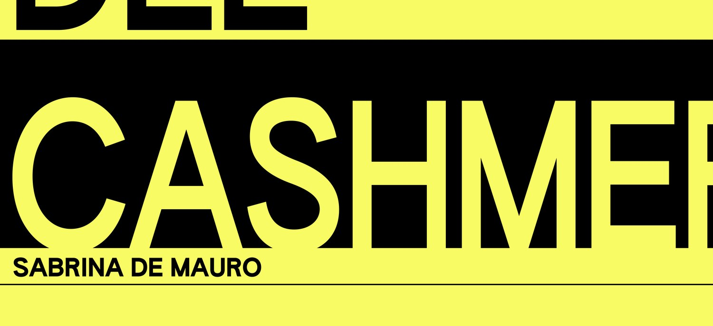
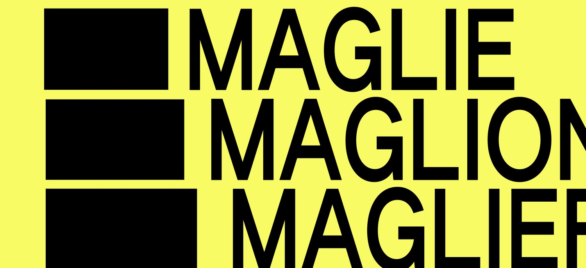

Il Bazar del Cashmere
Visual identity for a travelling cashmere market.

N°01 — Sunday 8 November 2026

N°02 — Sunday 22 November 2026
The project
Il Bazar del Cashmere is a travelling market of cashmere knitwear, organised by Sabrina De Mauro. I designed its visual identity. Since the bazar moves around, every event has its own number, date and colour, while the typographic structure stays the same, so it is recognisable at every edition.
The poster was born to have an aggressive, almost punk impact: huge, tightly packed letters, solid black blocks, acid colours. The name fills the whole top; Cashmere is cut out in negative from a black band, like a label. The date sits small in the centre, surrounded by an empty band, so that the poster recreates the look of an envelope with the address written in the middle. The line «maglie, maglioni, maglieria» (tops, jumpers, knitwear) is written and stressed that way to recall the knife grinder’s van, the arrotino, that drives through Italian streets calling out loud what it offers. The address closes the poster in a solid band.
The posters mostly circulate on WhatsApp, to a very mixed audience: so the information is kept to a minimum and the hierarchy is clear, readable even on a phone screen.
Details
From the poster of the second edition. Click to enlarge.

